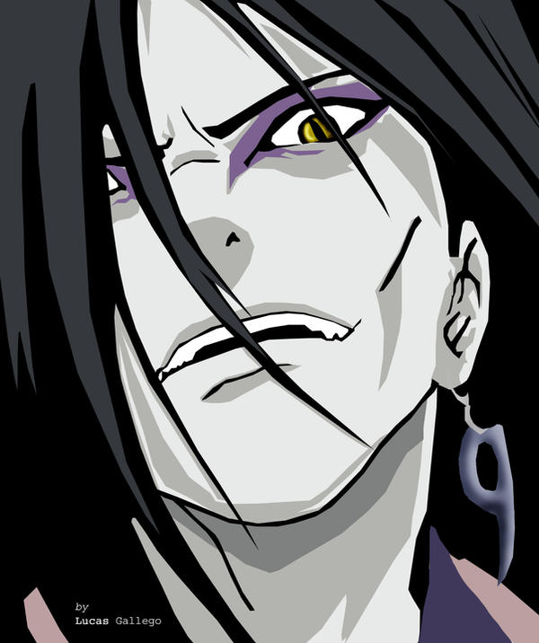
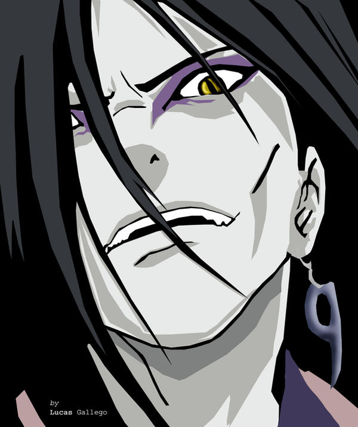
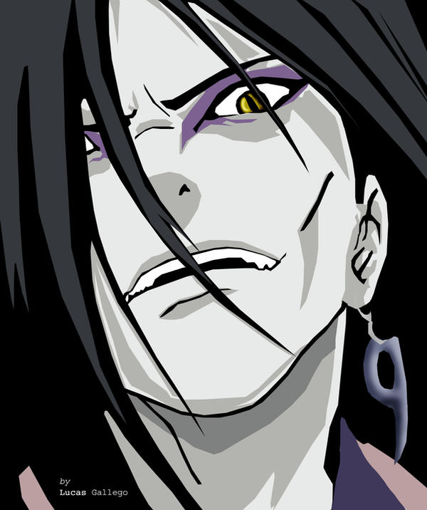
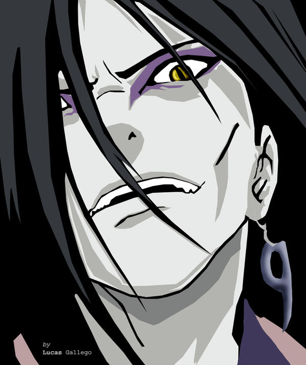

Naruto Shippuden fue un anime retransmitido entre los años 2007 y 2017.
Cuenta con un total de 500 episodios, de los cuales 262 son canon y 193
son relleno, lo que supone un 39% de relleno.
El resto de episodios se
dividen en mixtos (parte canon y parte relleno) o novelas. Para los más
despistados y que todavía no conocéis el anime, a continuación os dejamos
la sinopsis del mismo:
“La historia rodea a un mayor y un poco más maduro Naruto Uzumaki y su
aventura para rescatar a su amigo Sasuke Uchiha de las garras del Orochimaru,
antes de que este utilize el cuerpo de su amigo.
Sakura también se unirá a
su viaje, por la que comienza a entrenar con Tsunade. Luego de 2 años y
medio entrenando con Jiraiya, Naruto regresa a Konoha, y se decide alcanzar
su sueño de una buena vez,
aunque no será nada fácil. Ahora ha formado más
enemigos dentro de la Organización Shinobi, Akatsuki; que siguen buscando
el demonio en su interior. Ahora, 3 años después de los eventos de "Naruto",
el viaje del muchacho para volverse Hokage continúa...”